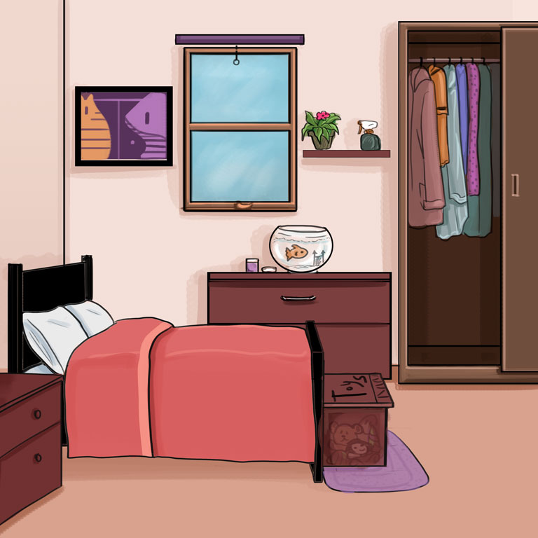

Omple els buits: Preposicions de lloc
Introdueix la paraula correcta a l’espai en blanc, fes clic a Comprova —o prem la tecla Retorn— i escolta la frase completa.


Nota lingüística:
- everyone / everybody : semblen parlar de molta gent, però gramaticalment són singulars.
Han d'anar amb «was», no «were». Funcionen com "tothom".
Una pista que et pot ser útil és recordar que acaben en "one" i "body", que són paraules singulars.`
- take photos / take pictures: "Take photos" és correcte, però “take pictures” és més comú en anglès del dia a dia.